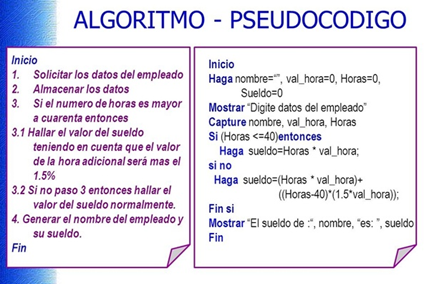
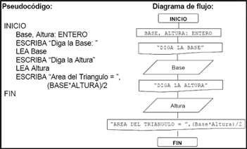

La razón básica del pseudocódigo es lograr la representación de forma muy detallada, de una posible solución a un algoritmo; e igualmente muy parecida al lenguaje en que se codificará dicha solución.
Los Pseudocódigos son la descripción flexible y muy parecida a nuestro lenguaje natural, de algoritmos de forma similar a un lenguaje de programación, pero sin su sintaxis estricta. Tienen la ventaja de ser más concisos que los diagramas de flujo, facilitando escribir instrucciones complejas y transferibles a los lenguajes de programación. El pseudocódigo no está regido por ningún estándar formal. Por ejemplo, en nuestro contexto particular usaremos la palabra LEER para la lectura de datos por un programa (que recibe datos desde algún sitio), e IMPRIMIR para la salida de datos (que escribe información en algún medio).
Según la autora Analía Lanzillotta: "Considerado como un lenguaje falso, el pseudocódigo es un lenguaje intermedio entre nuestro lenguaje y el de programación, debido a que quien lo utiliza se guía por una serie de normas, pero sin llegar a usar una estructura tan rígida como la del lenguaje de programación.”
El siguiente es el pseudocódigo del algoritmo para calcular la altura de una persona en pies a partir de la altura en centímetros introducida por el teclado (1 pie=30.48 centímetros):
Inicio
Fin
A continuación,se muestra un sencillo Algoritmo, y su correspondiente Pseudocódigo, donde vemos la flexibilidad ya que en lugar de las palabras LEER/IMPRIMIR, se utilizan equivalentemente las palabras Capture/Mostrar.

El pseudocódigo nació como un lenguaje similar al inglés y como medio para representar básicamente las estructuras de control de programación estructurada. Es un primer borrador, dado que tiene que traducirse posteriormente a un lenguaje formal de programación, ya que el pseudocódigo no se puede ejecutar en una computadora, si bien existen programas computacionales para crear los pseudocódigos.
El objetivo del pseudocódigo es centrarse más en la solución del algoritmo o el diseño de un software, que en el programa que se utiliza para crearlo. Porque es más fácil de manipular el pseudocódigo que el lenguaje de programación en sí, adicionalmente porque es más fácil de codificar.
Por ejemplo, al hacer un software con un fin determinado, se utiliza un pseudocódigo propio en donde se mezclan el lenguaje coloquial y palabras de lenguaje de programación, y una vez se logra formalizar el software, se puede realizar la transformación al lenguaje de programación definitivo a utilizar.
Al ser el pseudocódigo un lenguaje intermedio, no tiene una composición estándar que implique a todos los programadores utilizando la misma sintaxis exacta. Así mismo, siendo una herramienta como paso previo al lenguaje formal de programación, es fácil de transformar al que se ejecutará en la computadora.
Todo pseudocódigo debe posibilitar la descripción de los siguientes elementos:

Para finalizar esta lexia y dado que una imagen vale más que las palabras, este sencillo ejemplo de Pseudocódigo, y su correspondiente Diagrama de Flujo: